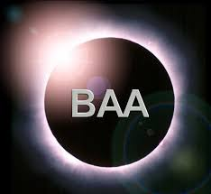
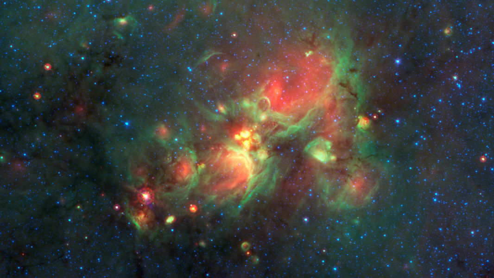
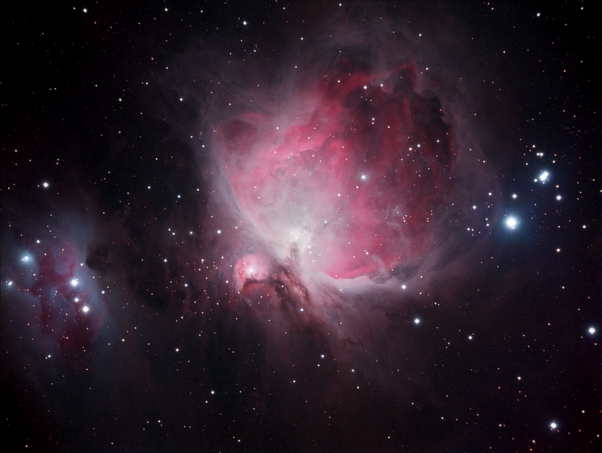
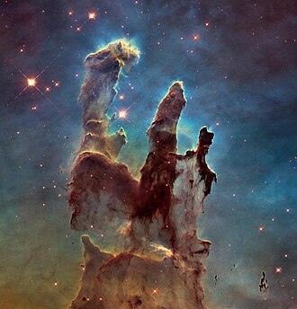

Other great websites: |

|

|
 |
There are many wonderful things that you can see in the night sky, with or without astronomy equipment. Even a small pair of binoculars can enhance your view of the night sky massively. But we're here to celebrate this ever growing community through awesome images, spectacular pieces of kit, and a general sense of belonging. We recommend pieces of fabulous stargazing equipment, help amateur astronomers who want to learn but don't know where to start, get started.

|

|

|
 |
Try clicking on the images for some information about the objects in them!
| Object Name | Image |
| M42 Orion Nebula |  |
| The Pillars of Creation* |  |
*Also known formerly as the Crab Nebula M1.